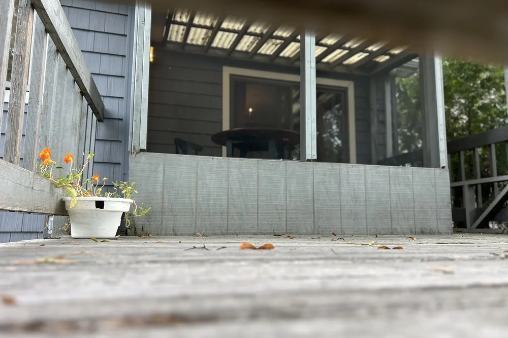
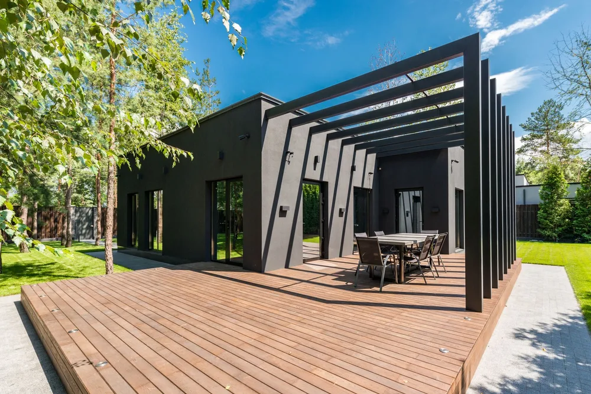
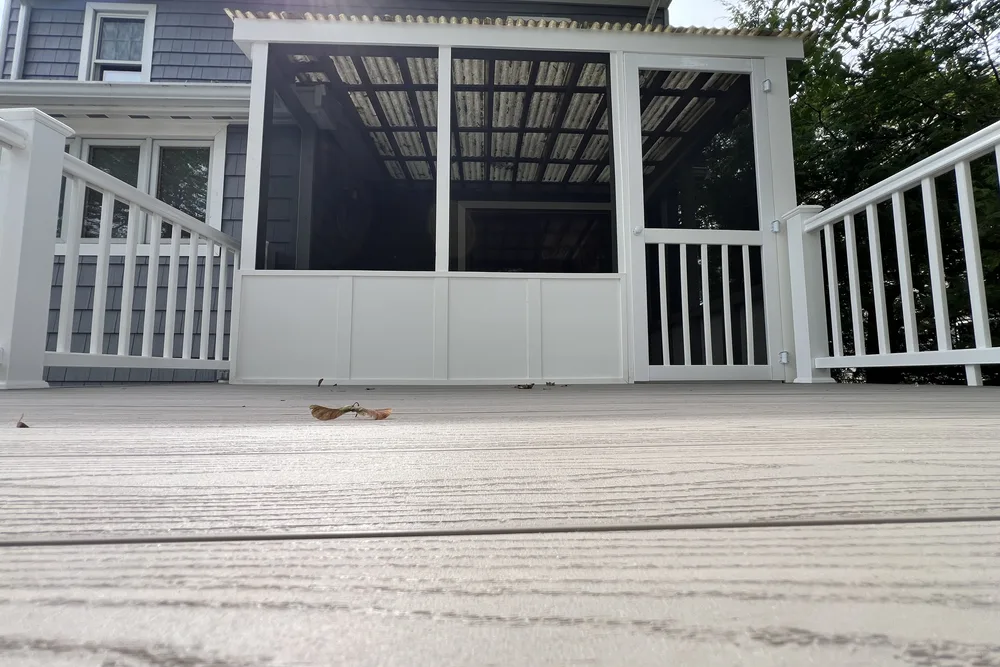
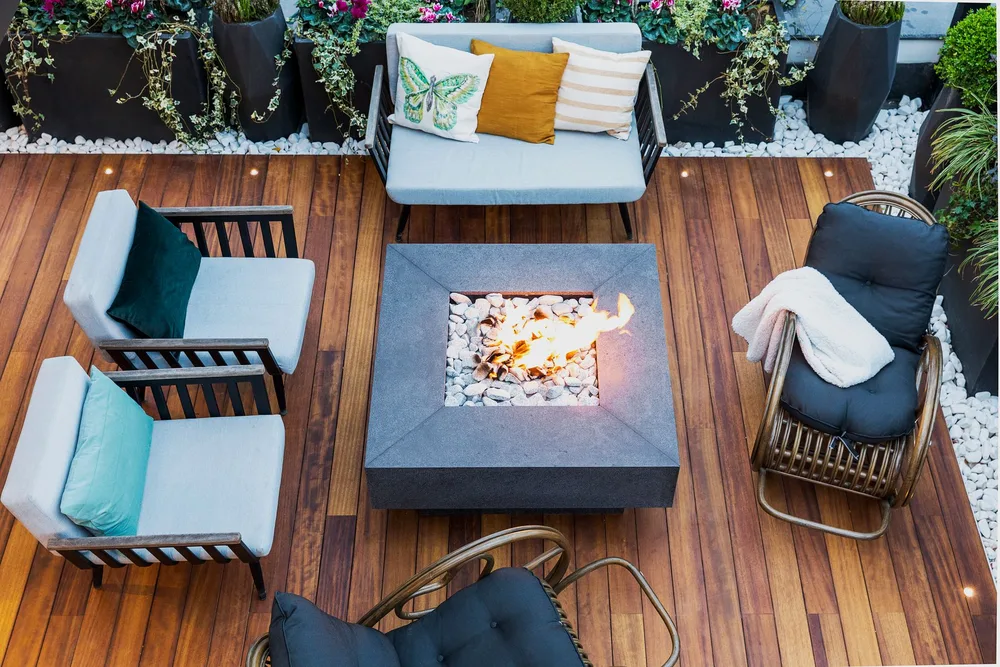
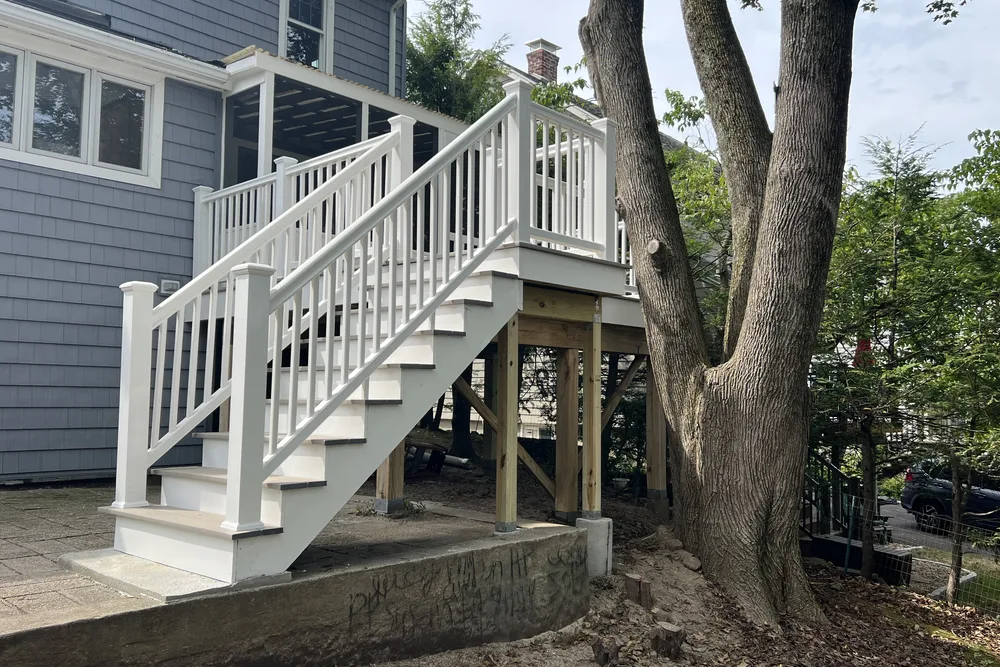
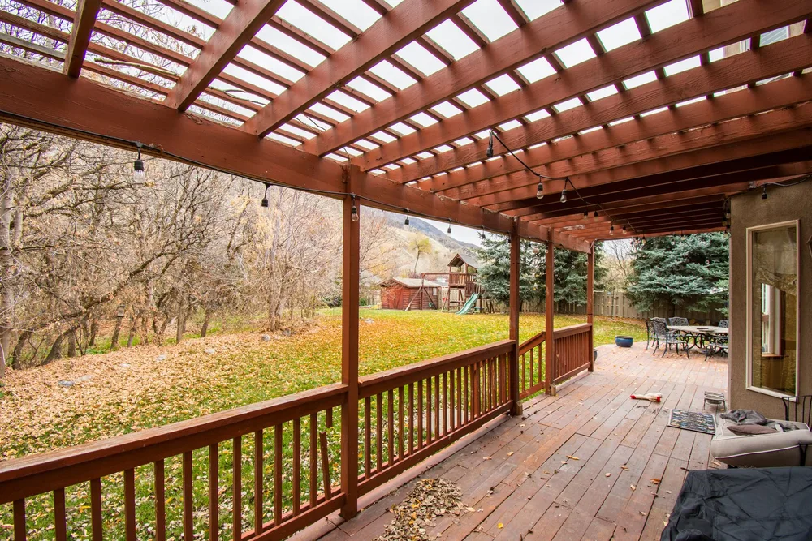
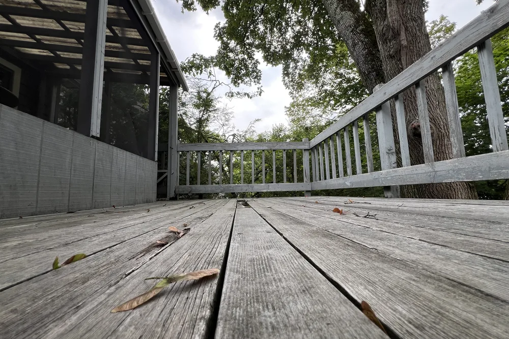

Saugus deck contractors
Saugus deck contractors for a backyard that gets used
Saugus deck builders at DeFaria Construction plan framing, decking, railings and layout so the outdoor space is safe, durable and ready for New England seasons.
Local search focus
Saugus decks start with the frame you cannot see.

Across Cliftondale, East Saugus, Lynnhurst, Oaklandvale, Saugus Center, North Saugus and Golden Hills, Saugus mixes mid-century capes and ranches in Cliftondale and Lynnhurst with older colonials near Saugus Center. A Saugus deck lives outside through hot summers and hard winters, so the footings, framing and fasteners matter as much as the boards on top.
This page is built for Saugus homeowners comparing deck builders and deck contractors near them. It connects the Saugus search to project photos, neighborhoods, the full deck scope and a direct estimate path.
- Clear estimate conversations before the project starts.
- Direct communication with the homeowner from walkthrough to final walkthrough.
- Local coverage across Saugus and the wider Essex County area.
The scope
What a full Saugus deck project covers

In Saugus, mid-century capes and ranches alongside older colonials near Saugus Center often shape how a project is planned.
- A frame and footings built to last outdoors.
- Clean decking, solid railings and safe stairs.
- A layout that fits the backyard and the home.
Saugus permits and inspections run through the Town of Saugus Building Department, and DeFaria keeps that step organized so scope and timeline stay realistic.
Cost
How much does a deck cost in Saugus?

For a Saugus deck, budget about $20 to $60 per square foot, so most decks are $8,000 to $30,000 depending on size and materials. The estimate follows the real scope.
- The size and height of the deck.
- Pressure-treated wood versus composite decking.
- Railings, stairs and any built-in features.
- Footings and framing for the site and load.
Because mid-century capes and ranches alongside older colonials near Saugus Center often shape how a project is planned in Saugus, hidden conditions behind the walls are priced honestly at the walkthrough, not discovered mid-project.
DeFaria gives a fixed, itemized Saugus estimate at the walkthrough, so the price matches the actual scope instead of a guess.
Process
How a Saugus deck project runs, step by step

Most Saugus decks follow the same clear path, so you always know what happens next.
- Design walkthrough and an itemized estimate.
- Permitting with the town.
- Footings dug below the frost line and set.
- Frame built and tied to the house.
- Decking laid and fastened down.
- Stairs, railings and finish work.
- Final walkthrough with you.
DeFaria coordinates the Saugus permit with the Town of Saugus Building Department before the rough-in, and keeps you updated at each step.
A typical Saugus deck runs roughly 1 to 3 weeks, depending on the scope and finish.
Materials
Materials and finishes that hold up on Saugus decks

A Saugus deck faces sun, rain and snow all year, so the framing, fasteners and decking are chosen to last outdoors.
- Solid footings and framing for a deck that stays level.
- Decking chosen for durability and low upkeep.
- Weather-rated hardware throughout.
- Safe, code-built railings and stairs.
From Cliftondale to Lynnhurst, mid-century capes and ranches alongside older colonials near Saugus Center often shape how a project is planned, which is exactly why the finish is specified for the home rather than a catalog.
When to remodel
Signs it is time for a new Saugus deck

A few clear signs a Saugus deck is ready to replace or build:
- Boards that are soft, cracked or splintering.
- Loose railings or shaky stairs.
- A deck that is sinking or separating.
- A backyard that needs a real gathering space.
- Investing in curb appeal and value.
Older homes around Cliftondale and East Saugus in Saugus show these first.
Project photos
Deck photos for Saugus homeowners
The Saugus deck page pairs local search intent with real project photos, so visitors see the finish level before requesting an estimate.

Areas covered
Decks across Saugus neighborhoods
DeFaria Construction supports deck searches across Saugus and nearby Essex County towns, giving visitors enough local context to decide whether DeFaria is the right fit before they call.
From Cliftondale to Golden Hills, Saugus homeowners get a decks and patios permitted through the Town of Saugus Building Department and matched to how local homes are built.
- Cliftondale
- East Saugus
- Lynnhurst
- Oaklandvale
- Saugus Center
- North Saugus
- Golden Hills
Experience
Why this Saugus page is built for real homeowners, not just keywords.
DeFaria Construction is a local, owner-led remodeling company working across Essex County and Middlesex County. With Luiz DeFaria involved directly and an A+ BBB record behind the work, the Saugus deck page is written around real framing, materials and safe finish, not a city name dropped into a template.
DeFaria Construction is a licensed and insured local contractor with an A+ BBB rating and verified customer reviews, and every Saugus project is owner-led by Luiz DeFaria from the first walkthrough to the final one.
"our Saugus deck is solid underfoot and finally a place we actually use."
Saugus homeowner
The goal is to help someone searching for Saugus deck contractors understand the scope, the neighborhoods covered and how to start a direct conversation before requesting a free estimate.
Call (617) 893-2221 for a free estimateFAQ
Common questions about decks and patios in Saugus
What deck work does DeFaria Construction handle in Saugus?
In Saugus DeFaria Construction handles footings, framing, decking, railings, stairs and built-ins for a new deck or a full deck rebuild.
How much does a deck cost in Saugus?
A Saugus deck usually runs about $20 to $60 per square foot, so most decks land between $8,000 and $30,000 depending on size and materials. DeFaria gives a fixed, itemized estimate at the walkthrough.
How long does a Saugus deck take to build?
Most Saugus decks take about 1 to 3 weeks once permits are in, depending on size, height and materials.
Should I use pressure-treated wood or composite for my Saugus deck?
Both work in Saugus. Pressure-treated wood costs less up front; composite costs more but needs less upkeep. DeFaria helps you weigh budget, look and maintenance at the walkthrough.
Is DeFaria Construction licensed and insured?
Yes. DeFaria Construction is a licensed and insured contractor with an A+ BBB rating and verified reviews, and every Saugus project is owner-led by Luiz DeFaria.
Does DeFaria handle Saugus deck permits and inspections?
Yes. Saugus permits and inspections run through the Town of Saugus Building Department, and DeFaria keeps that step organized so scope and timeline stay realistic.